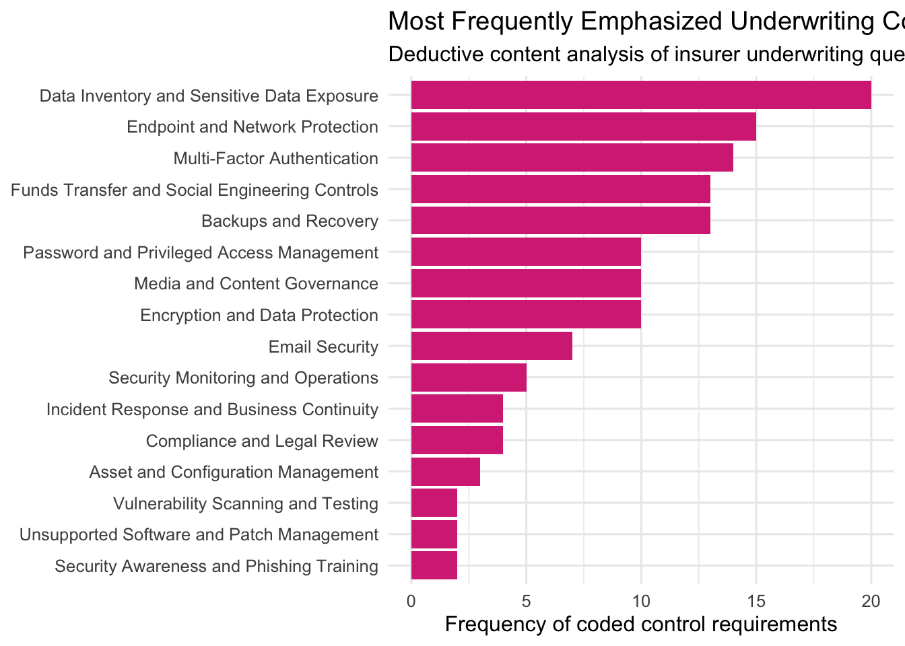
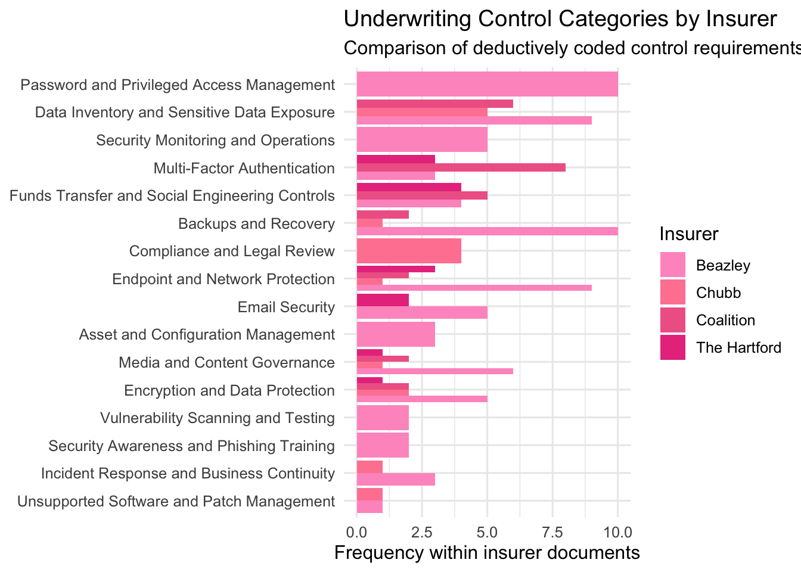
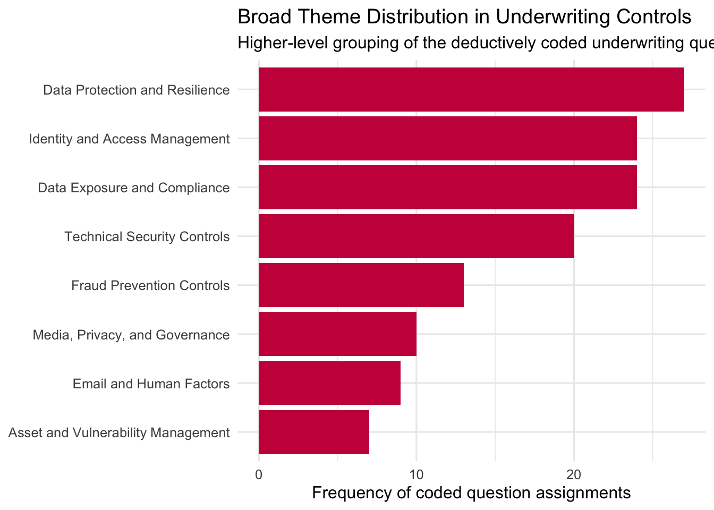

library(tidyverse)
library(readr)
library(quanteda)
library(quanteda.textstats)
library(quanteda.textplots)
library(stringr)
library(scales)
library(RColorBrewer)
library(topicmodels)
library(plotly)
library(knitr)Cyber Insurance Research
1 Quantitative Overview
This project for my senior capstone analyzes a CSV file of breach descriptions as a text corpus. The goal is to identify the most common claim language, incident types, PHI categories, mitigation actions, and broader topic patterns mentioned across the records.
The workflow follows a text-mining structure that moves from spreadsheet text to a corpus, then to tokens, and then to a document-feature matrix for visual analysis. This makes it possible to compare repeated language patterns across breach descriptions while preserving the full dataset.
2 Data and Workflow
The analysis proceeds in six steps:
- Read the CSV into R.
- Treat each non-empty CSV row as one breach record.
- Create simple metadata from the text, such as incident type and number of affected individuals.
- Build a quanteda corpus and document-feature matrix.
- Generate visualizations for word frequency, incident patterns, PHI categories, and common phrases.
- Save a clean extracted dataset for future use.
3 Software and References
This project used the following tools and references:
4 Load Packages
This section loads the R packages used for CSV import, cleaning, corpus construction, plotting, and topic modeling.
5 Read the CSV
This section reads the CSV into R. Because the CSV already stores the breach descriptions in tabular form, there is no need to reconstruct records from PDF text.
csv_file <- "WebDescription (1)(Sheet1).csv"
raw_claims <- read_csv(csv_file, show_col_types = FALSE)
cat("Rows loaded from CSV:", nrow(raw_claims), "\n")Rows loaded from CSV: 5008 cat("Columns found:", paste(names(raw_claims), collapse = ", "), "\n")Columns found: Web Description 6 Create the Record-Level Dataset
This step identifies the breach-description column and treats each non-empty CSV row as one claim record. That means the report uses the CSV directly rather than relying on PDF splitting.
text_col <- names(raw_claims)[
stringr::str_detect(
names(raw_claims),
stringr::regex("^web\\s*description$", ignore_case = TRUE)
)
][1]
if (is.na(text_col) && ncol(raw_claims) == 1) {
text_col <- names(raw_claims)[1]
}
if (is.na(text_col)) {
stop(
paste0(
"Could not find a 'Web Description' column. Columns found: ",
paste(names(raw_claims), collapse = ", ")
)
)
}
claims <- raw_claims %>%
mutate(text = .data[[text_col]]) %>%
mutate(text = stringr::str_squish(as.character(text))) %>%
filter(!is.na(text), text != "") %>%
mutate(doc_id = paste0("claim_", row_number())) %>%
select(doc_id, text)
cat("Non-empty breach records used in analysis:", nrow(claims), "\n")Non-empty breach records used in analysis: 5008 7 Create Simple Metadata
This section creates basic variables directly from the text. These variables help summarize the kinds of incidents and the level of impact described in the records.
claims <- claims %>%
mutate(
incident_type = case_when(
str_detect(str_to_lower(text), "ransomware") ~ "Ransomware",
str_detect(str_to_lower(text), "phishing") ~ "Phishing",
str_detect(str_to_lower(text), "wrong recipient|wrong recipients") ~ "Wrong recipient",
str_detect(str_to_lower(text), "hacking incident|hacking attack") ~ "Hacking",
str_detect(str_to_lower(text), "cybersecurity incident") ~ "Cybersecurity incident",
str_detect(str_to_lower(text), "cyber-attack|cyberattack") ~ "Cyberattack",
str_detect(str_to_lower(text), "viewable over the internet|publicly available via the internet") ~ "Internet exposure",
str_detect(str_to_lower(text), "lost during transport|mailed|postcard") ~ "Mailing / transport",
TRUE ~ "Other"
),
affected_raw = str_extract(text, "\\d{1,3}(?:,\\d{3})*\\s+individuals"),
affected_individuals = str_extract(affected_raw, "\\d{1,3}(?:,\\d{3})*"),
affected_individuals = as.numeric(str_replace_all(affected_individuals, ",", "")),
credit_monitoring = if_else(
str_detect(
str_to_lower(text),
"credit monitoring|free credit monitoring|complimentary credit monitoring"
),
1, 0
),
retraining = if_else(
str_detect(str_to_lower(text), "retrained|retraining|training"),
1, 0
),
technical_safeguards = if_else(
str_detect(
str_to_lower(text),
"technical safeguards|security safeguards|access controls|encryption|multifactor authentication|multi-factor authentication"
),
1, 0
),
media_notice = if_else(
str_detect(str_to_lower(text), "the media|media\\b"),
1, 0
)
)
table(claims$incident_type)
Cyberattack Cybersecurity incident Hacking
564 114 167
Internet exposure Mailing / transport Other
11 158 1556
Phishing Ransomware Wrong recipient
1041 1171 226 8 Build the Corpus and Document-Feature Matrix
This is the main text-mining setup step. The CSV text is converted into a quanteda corpus, tokenized, cleaned, and transformed into a document-feature matrix.
corp_claims <- corpus(claims, text_field = "text")
toks <- tokens(
corp_claims,
remove_punct = TRUE,
remove_numbers = TRUE,
remove_symbols = TRUE,
remove_url = TRUE
) %>%
tokens_tolower() %>%
tokens_remove(stopwords("english")) %>%
tokens_remove(c(
"ce", "ba", "phi", "hhs", "ocr", "reported", "affected", "individuals",
"information", "protected", "health", "involved", "included", "entity",
"covered", "business", "associate", "breach", "response", "provided",
"implemented", "additional", "notified", "technical", "administrative",
"security", "safeguards", "media", "names", "addresses", "dates", "birth"
))
dfmat <- dfm(toks)
dfmat <- dfm_trim(dfmat, min_termfreq = 3, min_docfreq = 2)
cat("DFM:", ndoc(dfmat), "documents,", nfeat(dfmat), "features\n")DFM: 5008 documents, 2855 features9 Graph 1: Most Common Words
This graph shows the terms that appear most often across all breach descriptions.
It provides a broad overview of the dominant language in the dataset.
topfeat <- topfeatures(dfmat, 20)
top_words <- tibble(
term = names(topfeat),
count = as.numeric(topfeat)
)
ggplot(top_words, aes(x = reorder(term, count), y = count)) +
geom_col(fill = "#d63384") +
coord_flip() +
labs(
title = "Most Common Words in Breach Descriptions",
subtitle = "Overall word frequency across all CSV records",
x = NULL,
y = "Word frequency across records"
) +
theme_minimal(base_size = 12)
10 Graph 2: Incident Type Distribution
This graph shows how often each type of breach incident appears in the records.
It helps identify which incident types are most common in the corpus.
claims %>%
count(incident_type, sort = TRUE) %>%
ggplot(aes(x = reorder(incident_type, n), y = n)) +
geom_col(fill = "#e83e8c") +
coord_flip() +
labs(
title = "Incident Types in Breach Descriptions",
subtitle = "Frequency of broad incident categories",
x = NULL,
y = "Number of breach records"
) +
theme_minimal(base_size = 12)
11 Graph 3: Total Affected Individuals by Incident Type
This graph moves from record counts to impact. It shows which incident types account for the largest total number of affected individuals.
claims %>%
group_by(incident_type) %>%
summarise(total_affected = sum(affected_individuals, na.rm = TRUE), .groups = "drop") %>%
arrange(desc(total_affected)) %>%
ggplot(aes(x = reorder(incident_type, total_affected), y = total_affected)) +
geom_col(fill = "#f06595") +
coord_flip() +
scale_y_continuous(labels = comma) +
labs(
title = "Total Affected Individuals by Incident Type",
subtitle = "Aggregate impact of each incident category",
x = NULL,
y = "Total affected individuals"
) +
theme_minimal(base_size = 12)
12 Graph 4: Mitigation Actions Mentioned
This graph summarizes the response actions described in the breach narratives.
It shows which mitigation steps appear most often after an incident.
claims %>%
summarise(
`Credit monitoring` = sum(credit_monitoring, na.rm = TRUE),
`Retraining / training` = sum(retraining, na.rm = TRUE),
`Technical safeguards` = sum(technical_safeguards, na.rm = TRUE),
`Media notice` = sum(media_notice, na.rm = TRUE)
) %>%
pivot_longer(cols = everything(), names_to = "action", values_to = "count") %>%
ggplot(aes(x = reorder(action, count), y = count)) +
geom_col(fill = "#ff85a1") +
coord_flip() +
labs(
title = "Most Common Mitigation Actions",
subtitle = "Response measures described in the records",
x = NULL,
y = "Number of records mentioning action"
) +
theme_minimal(base_size = 12)
13 Graph 5: Most Frequently Mentioned PHI Categories
This graph focuses on the types of protected health information mentioned in the breach descriptions. It highlights which data categories appear most often in the text.
phi_terms <- c(
"social security",
"drivers license",
"dates of birth",
"claims information",
"financial information",
"medications",
"diagnoses",
"lab results",
"health insurance",
"clinical information",
"demographic information",
"treatment information",
"email addresses"
)
phi_counts <- tibble(term = phi_terms) %>%
mutate(
count = map_int(term, ~ sum(str_detect(str_to_lower(claims$text), fixed(.x, ignore_case = TRUE))))
) %>%
arrange(desc(count))
ggplot(phi_counts, aes(x = reorder(term, count), y = count)) +
geom_col(fill = "#c9184a") +
coord_flip() +
labs(
title = "Most Frequently Mentioned PHI Categories",
subtitle = "Specific data types referenced in the breach records",
x = NULL,
y = "Number of records mentioning PHI category"
) +
theme_minimal(base_size = 12)
14 Graph 6: Most Common Two-Word Phrases
Single words are useful, but repeated phrases can show more specific patterns.
This graph identifies the most common two-word collocations in the corpus.
col2 <- textstat_collocations(toks, size = 2, min_count = 3)
top_col2 <- col2 %>%
as_tibble() %>%
slice_max(order_by = count, n = 15)
ggplot(top_col2, aes(x = reorder(collocation, count), y = count)) +
geom_col(fill = "#ff99c8") +
coord_flip() +
labs(
title = "Most Common Two-Word Phrases",
subtitle = "Frequent collocations across breach descriptions",
x = NULL,
y = "Collocation frequency"
) +
theme_minimal(base_size = 12)
15 Graph 7: Word Cloud
The word cloud offers a quick visual summary of the vocabulary used most often in the corpus. It complements the bar chart by emphasizing overall prominence rather than exact counts.
textplot_wordcloud(
dfmat,
max_words = 75,
color = c("#d63384", "#e83e8c", "#f06595", "#ff85a1", "#ff99c8", "#c9184a")
)
16 Save Output
This final step saves the extracted record-level dataset.
write_csv(claims, "claims_extracted_from_csv.csv")17 Interactive Topic Modeling
17.1 Intertopic Map Overview
This section is separate from the earlier graphs because it uses topic modeling rather than simple word-frequency analysis. The goal is to uncover broader themes in the breach descriptions and visualize how similar or different those themes are from one another.
The labels shown on the map are researcher-assigned summaries based on each topic’s most defining words. This means the model identifies the word patterns first, and the final topic labels are then interpreted in plain language.
17.2 Step 1: Check Required Packages and Objects
This step confirms that the required packages are installed and that the document-feature matrix from the earlier analysis already exists. The intertopic analysis depends on the cleaned dfmat object created in the main text-analysis section.
if (!requireNamespace("topicmodels", quietly = TRUE)) {
stop("Package 'topicmodels' is not installed. Run install.packages('topicmodels') in the Console, then render again.")
}
if (!requireNamespace("plotly", quietly = TRUE)) {
stop("Package 'plotly' is not installed. Run install.packages('plotly') in the Console, then render again.")
}
if (!exists("dfmat")) {
stop("The object 'dfmat' does not exist. Run the earlier corpus and DFM sections first.")
}17.3 Step 2: Trim the Document-Feature Matrix for Topic Modeling
This step creates a version of the document-feature matrix specifically for topic modeling. Very rare terms and overly common terms are trimmed so that the model focuses on words that are more useful for identifying themes.
dfmat_topic <- quanteda::dfm_trim(
dfmat,
min_termfreq = 5,
min_docfreq = 2,
max_docfreq = floor(quanteda::ndoc(dfmat) * 0.85),
docfreq_type = "count"
)
if (quanteda::nfeat(dfmat_topic) < 10) {
stop("Too few terms remain after trimming for topic modeling. Lower min_termfreq or min_docfreq and try again.")
}
cat("Topic-modeling DFM:", quanteda::ndoc(dfmat_topic), "documents and", quanteda::nfeat(dfmat_topic), "features\n")Topic-modeling DFM: 5008 documents and 1987 features17.4 Step 3: Convert the Matrix and Fit the LDA Model
This step converts the quanteda matrix into the format required by topicmodels, then fits a Latent Dirichlet Allocation model. The model is set to estimate five topics.
dtm_topic <- quanteda::convert(dfmat_topic, to = "topicmodels")
set.seed(1234)
k <- 5
lda_fit <- topicmodels::LDA(
dtm_topic,
k = k,
control = list(seed = 1234)
)
lda_fitA LDA_VEM topic model with 5 topics.17.5 Step 4: Extract Topic-Term and Document-Topic Probabilities
This step pulls out the two main outputs of the topic model:
phi: the probability of each term within each topictheta: the probability of each topic within each document
These are the core parts for labeling topics and building the intertopic map.
post <- topicmodels::posterior(lda_fit)
phi <- post$terms
theta <- post$topics
dim(phi)[1] 5 1987dim(theta)[1] 5007 517.6 Step 5: Get the Top Words for Each Topic
This step identifies the most important words within each topic. These top words are later used to create readable topic labels and interpretations.
top_terms_list <- apply(phi, 1, function(x) {
names(sort(x, decreasing = TRUE))[1:8]
})
top_terms_df <- tibble::tibble(
topic_id = 1:k,
top_terms = vapply(1:k, function(i) paste(top_terms_list[, i], collapse = ", "), character(1))
)
knitr::kable(
top_terms_df,
caption = "Top defining words for each modeled topic"
)| topic_id | top_terms |
|---|---|
| 1 | numbers, services, credit, monitoring, diagnoses, social, complimentary, better |
| 2 | obtained, assurances, employee, actions, notification, corrective, procedures, policies |
| 3 | substitute, notice, numbers, ransomware, attack, experienced, website, posted |
| 4 | email, ephi, phishing, electronic, retrained, employee, numbers, employees |
| 5 | s, investigation, access, risk, hipaa, notification, ephi, analysis |
17.7 Step 6: Assign Readable Topic Labels
The model itself does not produce human-friendly names. This step translates the top words into interpretable labels and short meanings so the output is easier to explain in a research setting.
infer_topic_info <- function(terms) {
terms_lower <- tolower(terms)
if (any(terms_lower %in% c("ransomware", "cyberattack", "hacking", "attack", "network", "threat", "compromise"))) {
list(
label = "Cyberattacks and Ransomware",
meaning = "This topic groups records centered on hacking, ransomware, and other network-based intrusions."
)
} else if (any(terms_lower %in% c("phishing", "email", "recipient", "mail", "mailed", "transport"))) {
list(
label = "Email, Mailing, and Delivery Errors",
meaning = "This topic captures incidents involving phishing, misdirected emails, mailed records, or delivery mistakes."
)
} else if (any(terms_lower %in% c("clinical", "diagnoses", "treatment", "medications", "lab", "insurance", "claims", "financial", "demographic", "social", "security", "birth"))) {
list(
label = "Types of Exposed PHI",
meaning = "This topic emphasizes the kinds of protected health information discussed in the breach descriptions."
)
} else if (any(terms_lower %in% c("credit", "monitoring", "retrained", "training", "encryption", "controls", "safeguards", "technical", "administrative", "password"))) {
list(
label = "Mitigation and Response Actions",
meaning = "This topic focuses on the protective steps taken after a breach, such as training, safeguards, or monitoring."
)
} else if (any(terms_lower %in% c("notified", "notice", "media", "entity", "associate", "reported", "covered"))) {
list(
label = "Reporting and Notification Process",
meaning = "This topic centers on breach reporting, notifications, and the administrative process surrounding disclosure."
)
} else {
list(
label = paste(stringr::str_to_title(terms[1:min(2, length(terms))]), collapse = " and "),
meaning = "This topic is summarized using its most defining words because it does not clearly match one of the broader preset themes."
)
}
}
topic_info <- lapply(seq_len(k), function(i) infer_topic_info(top_terms_list[, i]))
topic_labels_raw <- vapply(topic_info, function(x) x$label, character(1))
topic_meanings <- vapply(topic_info, function(x) x$meaning, character(1))
label_index <- ave(seq_along(topic_labels_raw), topic_labels_raw, FUN = seq_along)
label_total <- ave(seq_along(topic_labels_raw), topic_labels_raw, FUN = length)
topic_labels <- ifelse(
label_total > 1,
paste0(topic_labels_raw, " ", label_index),
topic_labels_raw
)
topic_label_df <- tibble::tibble(
topic_id = 1:k,
topic_label = topic_labels,
interpretation = topic_meanings
)
knitr::kable(
topic_label_df,
caption = "Readable labels and interpretations for each modeled topic"
)| topic_id | topic_label | interpretation |
|---|---|---|
| 1 | Types of Exposed PHI | This topic emphasizes the kinds of protected health information discussed in the breach descriptions. |
| 2 | Obtained and Assurances | This topic is summarized using its most defining words because it does not clearly match one of the broader preset themes. |
| 3 | Cyberattacks and Ransomware | This topic groups records centered on hacking, ransomware, and other network-based intrusions. |
| 4 | Email, Mailing, and Delivery Errors | This topic captures incidents involving phishing, misdirected emails, mailed records, or delivery mistakes. |
| 5 | S and Investigation | This topic is summarized using its most defining words because it does not clearly match one of the broader preset themes. |
17.8 Step 7: Measure Topic Distances
To build the intertopic map, the topics need to be compared to one another.
This step calculates pairwise distances between topics based on their term distributions using Jensen-Shannon divergence.
js_divergence <- function(p, q) {
p <- p / sum(p)
q <- q / sum(q)
m <- 0.5 * (p + q)
kl_div <- function(x, y) {
sum(ifelse(x == 0, 0, x * log(x / y)))
}
0.5 * kl_div(p, m) + 0.5 * kl_div(q, m)
}
dist_mat <- matrix(0, nrow = k, ncol = k)
for (i in 1:k) {
for (j in 1:k) {
dist_mat[i, j] <- sqrt(js_divergence(phi[i, ], phi[j, ]))
}
}
dist_mat [,1] [,2] [,3] [,4] [,5]
[1,] 0.0000000 0.7369469 0.5393561 0.6365050 0.7663061
[2,] 0.7369469 0.0000000 0.7000478 0.6547420 0.6111812
[3,] 0.5393561 0.7000478 0.0000000 0.6474559 0.7280296
[4,] 0.6365050 0.6547420 0.6474559 0.0000000 0.7345389
[5,] 0.7663061 0.6111812 0.7280296 0.7345389 0.000000017.9 Step 8: Reduce Topic Distances to Two Dimensions
The distance matrix contains the similarities among all topics, but it is not easy to visualize directly. This step reduces the topic distances into two dimensions so the topics can be plotted on an intertopic map.
coords <- cmdscale(as.dist(dist_mat), k = 2)
coords_df <- tibble::tibble(
topic_id = 1:k,
x = coords[, 1],
y = coords[, 2]
)
knitr::kable(
coords_df,
caption = "Two-dimensional coordinates used for the intertopic map"
)| topic_id | x | y |
|---|---|---|
| 1 | 0.3177300 | 0.1079122 |
| 2 | -0.2795072 | -0.1227792 |
| 3 | 0.2382362 | 0.1697301 |
| 4 | 0.0905223 | -0.3625596 |
| 5 | -0.3669813 | 0.2076965 |
17.11 Step 10: Build the Final Topic Map Dataset
This step combines the topic labels, meanings, coordinates, top terms, and prevalence values into one final dataset for plotting.
pink_palette <- c("#d63384", "#e83e8c", "#f06595", "#ff85a1", "#ff99c8")
topic_map <- tibble::tibble(
topic_id = 1:k,
label = topic_labels,
x = coords[, 1],
y = coords[, 2],
prevalence = as.numeric(topic_prevalence),
top_terms = vapply(seq_len(k), function(i) paste(top_terms_list[, i], collapse = ", "), character(1)),
meaning = topic_meanings,
color = pink_palette[seq_len(k)]
)
knitr::kable(
topic_map %>%
dplyr::select(topic_id, label, prevalence, top_terms, meaning),
caption = "Final topic map dataset used in the interactive plot"
)| topic_id | label | prevalence | top_terms | meaning |
|---|---|---|---|---|
| 1 | Types of Exposed PHI | 26.8 | numbers, services, credit, monitoring, diagnoses, social, complimentary, better | This topic emphasizes the kinds of protected health information discussed in the breach descriptions. |
| 2 | Obtained and Assurances | 21.6 | obtained, assurances, employee, actions, notification, corrective, procedures, policies | This topic is summarized using its most defining words because it does not clearly match one of the broader preset themes. |
| 3 | Cyberattacks and Ransomware | 22.9 | substitute, notice, numbers, ransomware, attack, experienced, website, posted | This topic groups records centered on hacking, ransomware, and other network-based intrusions. |
| 4 | Email, Mailing, and Delivery Errors | 18.9 | email, ephi, phishing, electronic, retrained, employee, numbers, employees | This topic captures incidents involving phishing, misdirected emails, mailed records, or delivery mistakes. |
| 5 | S and Investigation | 9.7 | s, investigation, access, risk, hipaa, notification, ephi, analysis | This topic is summarized using its most defining words because it does not clearly match one of the broader preset themes. |
17.12 Step 11: Create the Interactive Intertopic Map
This is the final visualization step. Each bubble is a topic, the size reflects prevalence, the placement reflects similarity to other topics, and the hover text shows the topic meaning and top defining words.
bubble_sizes <- scales::rescale(as.numeric(topic_map$prevalence), to = c(35, 90))
plotly::plot_ly(
data = topic_map,
x = ~x,
y = ~y,
type = "scatter",
mode = "markers+text",
text = ~label,
textposition = "top center",
hovertemplate = ~paste0(
"<b>", label, "</b><br>",
"Dominant-topic share: ", prevalence, "%<br>",
"Top terms: ", top_terms, "<br>",
"Meaning: ", meaning,
"<extra></extra>"
),
marker = list(
size = bubble_sizes,
color = topic_map$color,
opacity = 0.80,
line = list(color = "#8a0f4d", width = 1.5)
)
) %>%
plotly::layout(
title = list(text = "Interactive Intertopic Distance Map"),
xaxis = list(title = "Dimension 1"),
yaxis = list(title = "Dimension 2")
)17.13 What the Output Means
The intertopic map should be read as a visual summary of how the latent topics relate to one another. If two bubbles are close together, that means those topics use similar vocabulary and are thematically related. If two bubbles are farther apart, that means their word distributions are more distinct.
Bubble size reflects dominant-topic share. A larger bubble means that topic is the main theme in more documents, while a smaller bubble means it is dominant in fewer documents.
The words shown in the hover text are the highest-probability terms for that topic.
These are the terms that most strongly define the topic according to the model.
The topic names are interpretive labels assigned after inspecting those top words.
In other words, the model discovers the word patterns first, and the final topic name is the human-readable explanation of what that pattern appears to represent.
17.14 Topic Modeling Notes
This section differs from the earlier graphs because it does not simply count words or categories. Instead, it uses co-occurrence patterns across documents to estimate latent topics, which can reveal broader thematic structure in the breach narratives.
AI Disclaimer: I used ChatGPT as a tutor to clarify instructions, troubleshoot errors, and better understand mistakes encountered during the process. It also assisted with wording and formatting; however, the final submission reflects my own work and judgment.
18 Deductive Content Analysis Overview
This section uses deductive content analysis to examine cyber insurance underwriting documents.
The goal is to identify which cybersecurity controls insurers emphasize most frequently, organize those questions into standardized control categories, and produce a structured qualitative review of underwriting priorities.
The unit of analysis is each underwriting control-related question. This is important for the qualitative report because it allows the analysis to move from raw underwriting forms to clearly defined control categories that can be counted, compared across insurers, and interpreted in relation to cyber risk.
19 Qualitative Data and Workflow
The deductive content analysis proceeds in seven steps:
- Read the insurer underwriting PDFs into R.
- Extract question-level units from each document.
- Clean the extracted text so that questions are readable and organized.
- Apply a predefined deductive codebook with explicit definitions and inclusion/exclusion criteria.
- Generate control frequencies and insurer comparisons.
- Export cleaned qualitative review files.
- Save a final dataset for the written qualitative report.
20 Why This Section Matters
This section is important because the qualitative portion of the project is not simply describing documents. Instead, it systematically reviews what insurers ask applicants to do, which controls appear most often, and which kinds of cybersecurity practices seem most emphasized during underwriting.
By using deductive content analysis, the report can clearly show: - which controls are prioritized, - how those controls are grouped conceptually, - and why those patterns matter for the broader research question.
21 Load Qualitative Packages
This section loads the packages used for PDF extraction, text cleaning, qualitative coding, exports, and tables.
library(tidyverse)
library(pdftools)
library(stringr)
library(writexl)
library(knitr)
library(scales)22 Identify the Underwriting PDFs
This section identifies the underwriting forms included in the qualitative review.
The code looks for the files in the working directory using the names shown in your folder, while also allowing flexible matching if the names vary slightly.
all_pdfs <- list.files(pattern = "\\.pdf$", full.names = FALSE)
find_pdf <- function(patterns) {
for (p in patterns) {
hits <- all_pdfs[str_detect(all_pdfs, regex(p, ignore_case = TRUE))]
hits <- setdiff(hits, "Figure01.pdf")
if (length(hits) > 0) return(hits[1])
}
return(NA_character_)
}
pdf_lookup <- tibble::tribble(
~insurer, ~document_label, ~source_file,
"Beazley", "Beazley Media E&O Application",
find_pdf(c("^beazley_media_liability_us", "beazley.*media", "media.*omissions.*beazley")),
"Chubb", "Chubb Cyber Enterprise Application",
find_pdf(c("^chubb cyber 2024", "chubb.*cyber")),
"Coalition", "Coalition Cyber & Technology E&O Application",
find_pdf(c("coalition.*cybertecheo", "cybertecheo")),
"Coalition", "Coalition Cyber Policy Application",
find_pdf(c("^cyber application.*coalition", "coalition.*cyber policy")),
"The Hartford", "CyberChoice Underwriting Application",
find_pdf(c("^hartford cyber application", "hartford.*cyber", "cyberchoice")),
"Beazley", "Beazley Ransomware Supplemental Application",
find_pdf(c("^beazley ransomware supplemental application", "beazley.*ransomware"))
) %>%
mutate(file_exists = !is.na(source_file) & file.exists(source_file))
if (sum(pdf_lookup$file_exists) == 0) {
stop(
paste0(
"No listed underwriting PDFs were found in the working directory. PDF files currently visible: ",
paste(all_pdfs, collapse = ", ")
)
)
}
pdf_lookup# A tibble: 6 × 4
insurer document_label source_file file_exists
<chr> <chr> <chr> <lgl>
1 Beazley Beazley Media E&O Application beazley_me… TRUE
2 Chubb Chubb Cyber Enterprise Application Chubb Cybe… TRUE
3 Coalition Coalition Cyber & Technology E&O Applica… Coalition-… TRUE
4 Coalition Coalition Cyber Policy Application Cyber Appl… TRUE
5 The Hartford CyberChoice Underwriting Application Hartford C… TRUE
6 Beazley Beazley Ransomware Supplemental Applicat… Beazley Ra… TRUE 23 Read and Clean the PDF Pages
This section reads the insurer PDFs into R and creates a page-level dataset. This is important because the raw PDF text must first be standardized before it can be reviewed as qualitative evidence.
clean_page_text <- function(x) {
x %>%
str_replace_all("\\r", "\n") %>%
str_replace_all("[\u00A0\t]", " ") %>%
str_replace_all(" +", " ") %>%
str_replace_all("\\n{2,}", "\n") %>%
str_trim()
}
pages_df <- purrr::map_dfr(
which(pdf_lookup$file_exists),
function(i) {
txt <- pdftools::pdf_text(pdf_lookup$source_file[i])
tibble(
source_file = pdf_lookup$source_file[i],
insurer = pdf_lookup$insurer[i],
document_label = pdf_lookup$document_label[i],
page = seq_along(txt),
page_text = purrr::map_chr(txt, clean_page_text)
)
}
)
cat("PDF files read:", n_distinct(pages_df$source_file), "\n")PDF files read: 6 cat("Total pages read:", nrow(pages_df), "\n")Total pages read: 37 24 Extract and Clean Question-Level Units
This section extracts candidate underwriting questions from the PDFs. It also cleans away answer-choice clutter such as Yes, No, Unknown, and legal boilerplate so the questions are readable and usable in the qualitative review.
drop_line_patterns <- c(
"^page \\d",
"^cb ",
"^cyusp",
"^sp ",
"fraud warning",
"warning statements",
"please read the policy carefully",
"all written statements",
"the undersigned authorized representative",
"attention .* applicants",
"click here to enter text",
"choose an item",
"notice: this policy",
"if a policy is issued",
"any person who knowingly",
"page \\d of \\d",
"©",
"continued on next page",
"please complete this section only",
"name of applicant",
"address city state zip",
"policy contains a defense within limits provision",
"for businesses with revenue",
"headquarters address",
"website and email domain",
"aggregate limit retention",
"desired effective date",
"global revenue",
"applicant address",
"revenue information",
"coverage required",
"general information",
"please list all website addresses",
"gross profit / net revenue",
"name of organization or legal entity",
"most recent completed fiscal year revenue",
"current fiscal year",
"website:",
"city state zip",
"premium:",
"deductible:",
"limit of liability:",
"retroactive date",
"aggregate limit",
"requested limit",
"requested retention",
"revenue\\*",
"gross profit",
"desired coverage",
"current coverage"
)
group_drop_patterns <- c(
"fraud against an insurer",
"guilty of a crime",
"criminal penalties",
"civil penalties",
"notice to .* applicants",
"all written statements",
"the insurer reserves the right",
"material misstatement",
"misrepresentation",
"warning"
)
question_start_patterns <- c(
"^\\d+[a-z]?\\)?\\s",
"^\\d+[a-z]?\\.",
"^[a-z]\\.",
"^[a-z]\\)",
"^do you ",
"^does ",
"^what ",
"^which ",
"^how ",
"^is ",
"^are ",
"^for which ",
"^identify ",
"^within the last",
"^have you ",
"^will ",
"^under what circumstances",
"^please describe",
"^please provide",
"^if yes"
)
keep_keywords <- c(
"security", "cyber", "incident", "privacy", "mfa", "multi-factor",
"encryption", "backup", "recovery", "patch", "vulnerability",
"firewall", "edr", "mdr", "epp", "ndr", "siem", "soc", "dns",
"training", "phishing", "email", "pam", "password", "service account",
"asset", "cmdb", "rdp", "remote access", "vpn", "smb",
"endpoint", "malicious", "domain", "dkim", "spf", "dmarc",
"offline", "incident response", "business continuity", "funds transfer",
"banking details", "pci", "pii", "phi", "hipaa", "hitech",
"legal review", "takedown", "content", "copyright", "trademark",
"mobile devices", "portable media", "privileged", "administrator",
"data", "records", "payment card", "protected information",
"antivirus", "firewalls", "sign off", "editorial", "media",
"backup", "fund transfer", "cloud", "monitoring", "social media",
"content", "infringe", "rights", "vendor", "wire", "ach"
)
fix_short_mfa_items <- function(x) {
dplyr::case_when(
str_detect(x, regex("^\\d+[a-z]?\\s*email$", ignore_case = TRUE)) ~
"Do you enforce multi-factor authentication (MFA) for email?",
str_detect(x, regex("^\\d+[a-z]?\\s*virtual private network \\(vpn\\)$", ignore_case = TRUE)) ~
"Do you enforce multi-factor authentication (MFA) for virtual private network (VPN) access?",
str_detect(x, regex("^\\d+[a-z]?\\s*remote desktop protocol \\(rdp\\).*remote access$", ignore_case = TRUE)) ~
"Do you enforce multi-factor authentication (MFA) for remote desktop protocol (RDP) or other remote access?",
str_detect(x, regex("^\\d+[a-z]?\\s*network ?/ ?cloud administration.*privileged user accounts$", ignore_case = TRUE)) ~
"Do you enforce multi-factor authentication (MFA) for network or cloud administration and other privileged user accounts?",
TRUE ~ x
)
}
clean_question_text <- function(x) {
x %>%
str_replace_all("[■□▪•☐☑]", "") %>%
str_replace_all("\\s+", " ") %>%
str_replace(
regex(
"\\s+(?:NO|YES|UNKNOWN|N/?A|SOMETIMES|REMOTE ACCESS NOT PERMITTED|WORKING HOURS ONLY|24/7|INTERNAL|THIRD PARTY|BOTH|ON ADMINISTRATIVE ACCOUNTS AND ALL CLOUD SERVICES WHERE SUPPORTED|N/?A - NO REMOTE ACCESS ALLOWED|N/?A - NO VPN ALLOWED)(?:\\s+(?:NO|YES|UNKNOWN|N/?A|SOMETIMES|REMOTE ACCESS NOT PERMITTED|WORKING HOURS ONLY|24/7|INTERNAL|THIRD PARTY|BOTH|ON ADMINISTRATIVE ACCOUNTS AND ALL CLOUD SERVICES WHERE SUPPORTED|N/?A - NO REMOTE ACCESS ALLOWED|N/?A - NO VPN ALLOWED))*\\s*$",
ignore_case = TRUE
),
""
) %>%
str_replace(
regex(
"\\s+(?:NEVER/?NOT REGULARLY|ANNUALLY|≥?2X PER YEAR|2-3 TIMES PER YEAR|QUARTERLY OR MORE OFTEN|WEEKLY|MONTHLY)(?:\\s+(?:NEVER/?NOT REGULARLY|ANNUALLY|≥?2X PER YEAR|2-3 TIMES PER YEAR|QUARTERLY OR MORE OFTEN|WEEKLY|MONTHLY))*\\s*$",
ignore_case = TRUE
),
""
) %>%
str_replace(
regex(
"\\s+(?:NO RECORDS|LESS THAN 100,000|100,000 ?[-–] ?500,000|500,000 ?[-–] ?1,000,000|OVER 1,000,000|0-5,000|5,001-25,000|> ?25,000|1-25|26-50|51-250|251-1,000|\\+1,000|0|1-5|6-10|>10)(?:\\s+(?:NO RECORDS|LESS THAN 100,000|100,000 ?[-–] ?500,000|500,000 ?[-–] ?1,000,000|OVER 1,000,000|0-5,000|5,001-25,000|> ?25,000|1-25|26-50|51-250|251-1,000|\\+1,000|0|1-5|6-10|>10))*\\s*$",
ignore_case = TRUE
),
""
) %>%
str_replace(regex("\\s+\\(If Yes\\)\\s*$", ignore_case = TRUE), "") %>%
str_replace(regex("\\s+If Yes\\s*$", ignore_case = TRUE), "") %>%
str_replace(regex("\\s+If No\\s*$", ignore_case = TRUE), "") %>%
str_replace(regex("\\s+Please explain\\??\\s*$", ignore_case = TRUE), "") %>%
str_replace_all("\\s+\\?+", "?") %>%
str_replace_all("\\s+\\.+$", "") %>%
str_squish() %>%
fix_short_mfa_items()
}
add_terminal_punctuation <- function(x) {
starts_question <- str_detect(
str_to_lower(x),
"^(do you|does|what|which|how|is|are|have you|will|under what circumstances|for which|within the last|please describe|please provide|identify)"
)
ifelse(
starts_question & !str_detect(x, "[\\?\\.:]$"),
paste0(x, "?"),
x
)
}
extract_questions_from_page <- function(page_text, source_file, insurer, document_label, page) {
lines <- page_text %>%
str_split("\n") %>%
.[[1]] %>%
str_squish()
lines <- lines[lines != ""]
lines_lower <- str_to_lower(lines)
keep_idx <- !str_detect(lines_lower, paste(drop_line_patterns, collapse = "|"))
lines <- lines[keep_idx]
lines_lower <- lines_lower[keep_idx]
is_start <- str_detect(lines_lower, paste(question_start_patterns, collapse = "|"))
if (!any(is_start)) {
return(tibble())
}
tibble(
line = lines,
line_lower = lines_lower,
is_start = is_start,
group_id = cumsum(is_start)
) %>%
filter(group_id > 0) %>%
group_by(group_id) %>%
summarise(
question_text = paste(line, collapse = " "),
lower_text = paste(line_lower, collapse = " "),
.groups = "drop"
) %>%
mutate(
question_text = clean_question_text(question_text),
question_text = add_terminal_punctuation(question_text),
lower_text = str_to_lower(question_text)
) %>%
filter(question_text != "") %>%
filter(str_detect(lower_text, paste(keep_keywords, collapse = "|"))) %>%
filter(!str_detect(lower_text, paste(group_drop_patterns, collapse = "|"))) %>%
filter(str_count(question_text, "\\S+") <= 65) %>%
mutate(
source_file = source_file,
insurer = insurer,
document_label = document_label,
page = page
) %>%
select(source_file, insurer, document_label, page, question_text)
}
question_units <- purrr::pmap_dfr(
list(
pages_df$page_text,
pages_df$source_file,
pages_df$insurer,
pages_df$document_label,
pages_df$page
),
extract_questions_from_page
) %>%
distinct() %>%
arrange(insurer, source_file, page) %>%
mutate(unit_id = row_number()) %>%
select(unit_id, insurer, document_label, source_file, page, question_text)
if (nrow(question_units) == 0) {
stop("No question-level units were extracted. Review the extraction filters.")
}
cat("Question-level units extracted:", nrow(question_units), "\n")Question-level units extracted: 157 25 Review the Cleaned Question Units
This section shows a readable preview of the extracted underwriting questions.
This is important because the qualitative review depends on the extracted questions being clean, interpretable, and organized before coding begins.
review_units_table <- question_units %>%
transmute(
Unit = unit_id,
Insurer = insurer,
Document = document_label,
Page = page,
Question = str_replace_all(str_wrap(question_text, width = 85), "\n", "<br>")
) %>%
slice_head(n = 20)
knitr::kable(
review_units_table,
escape = FALSE,
caption = "Sample of cleaned underwriting question-level units"
)| Unit | Insurer | Document | Page | Question |
|---|---|---|---|---|
| 1 | Beazley | Beazley Ransomware Supplemental Application | 1 | 1. a. Annual IT budget $ b. Percentage of IT budget spent on cybersecurity % |
| 2 | Beazley | Beazley Ransomware Supplemental Application | 1 | 2. a. Full-time IT employees b. Full-time IT cybersecurity employees |
| 3 | Beazley | Beazley Ransomware Supplemental Application | 1 | 3. Cybersecurity point of contact (CISO or equivalent role): Name Title Email Telephone Email Security |
| 4 | Beazley | Beazley Ransomware Supplemental Application | 1 | 4. What security controls do you have in place for incoming email? Choose all that apply. |
| 5 | Beazley | Beazley Ransomware Supplemental Application | 1 | a. Screening for malicious attachments e. Tagging external emails |
| 6 | Beazley | Beazley Ransomware Supplemental Application | 1 | b. Screening for malicious links f. DomainKeys Identified Mail (DKIM) |
| 7 | Beazley | Beazley Ransomware Supplemental Application | 1 | c. Quarantine service g. Sender Policy Framework (SPF) strictly enforced |
| 8 | Beazley | Beazley Ransomware Supplemental Application | 1 | d. Detonation and evaluation of attachments h. Domain Based Message Authentication, Reporting in a sandbox and Conformance (DMARC) |
| 9 | Beazley | Beazley Ransomware Supplemental Application | 1 | 5. How frequently do you conduct the following training for all employees? Type of training |
| 10 | Beazley | Beazley Ransomware Supplemental Application | 1 | a. Interactive phishing training |
| 11 | Beazley | Beazley Ransomware Supplemental Application | 1 | b. Phishing email simulations |
| 12 | Beazley | Beazley Ransomware Supplemental Application | 1 | 6. Do you require additional training for employees who fail phishing email simulations? |
| 13 | Beazley | Beazley Ransomware Supplemental Application | 1 | b. If you use Microsoft 365, do you use the Microsoft 365 Defender (formerly known as Advanced Threat Protection) add-on or an equivalent cybersecurity product with advanced threat hunting? (Leave blank if you do not use Microsoft 365.) |
| 14 | Beazley | Beazley Ransomware Supplemental Application | 1 | 9. Have you disabled legacy email protocols that use basic authentication (a username and password only), such as IMAP, POP3, and SMTP? |
| 15 | Beazley | Beazley Ransomware Supplemental Application | 2 | 11. a. Do you permit users remote access to web-based email (e.g., Outlook Web Access (OWA))? |
| 16 | Beazley | Beazley Ransomware Supplemental Application | 2 | b. If “Yes” to a., do you enforce MFA for access to web-based email? |
| 17 | Beazley | Beazley Ransomware Supplemental Application | 2 | 12. Do you provide your employees with password management software? |
| 18 | Beazley | Beazley Ransomware Supplemental Application | 2 | 13. Do you enforce MFA for all Domain Administrator accounts? Please note any exceptions in the “Other Cybersecurity Controls & Preventative Measures” section, below. “Domain Administrator accounts” does not include service accounts, which are addressed in a separate section below. |
| 19 | Beazley | Beazley Ransomware Supplemental Application | 2 | 14. Do you permit ordinary users local administrator rights to their devices (e.g., laptops)? |
| 20 | Beazley | Beazley Ransomware Supplemental Application | 2 | 15. a. Do you use a Privileged Access Management (PAM) tool? |
26 Build the Deductive Codebook
This section creates the deductive codebook used in the qualitative review.
Each code includes a definition, inclusion criteria, and exclusion criteria so that the report clearly explains what each category means and why it matters.
codebook <- tibble::tribble(
~code, ~broad_theme, ~definition, ~include_when, ~exclude_when,
"Email Security", "Email and Human Factors", "Controls designed to filter, authenticate, quarantine, or inspect inbound email.",
"Include malicious attachment screening, malicious link screening, DKIM, SPF, DMARC, quarantine services, secure email gateways, and external email tagging.",
"Exclude general phishing training unless the question is specifically about technical email filtering.",
"Security Awareness and Phishing Training", "Email and Human Factors", "Employee training or simulation activities designed to reduce phishing and cyber risk.",
"Include phishing training, phishing simulations, retraining after failures, and cybersecurity awareness training frequency.",
"Exclude technical email gateway, link screening, or attachment scanning controls.",
"Multi-Factor Authentication", "Identity and Access Management", "Use of MFA to secure access to systems, email, remote access, or privileged accounts.",
"Include MFA for remote access, VPN, RDP, webmail, email, privileged accounts, domain admin, or cloud administration.",
"Exclude general password policies unless MFA is explicitly mentioned.",
"Password and Privileged Access Management", "Identity and Access Management", "Controls governing passwords, password managers, PAM tools, least privilege, and administrator rights.",
"Include password managers, PAM, least privilege, local admin rights, privileged account controls, and service account password controls.",
"Exclude MFA unless the question is specifically about privileged password management.",
"Asset and Configuration Management", "Asset and Vulnerability Management", "Controls for maintaining inventory and configuration awareness of systems.",
"Include asset discovery tools, asset databases, configuration management databases, and hardened baseline configurations.",
"Exclude vulnerability scanning unless the focus is maintaining asset or configuration records.",
"Unsupported Software and Patch Management", "Asset and Vulnerability Management", "Controls aimed at patching, segregating, or supporting unsupported or end-of-life software.",
"Include critical patching procedures, unsupported or end-of-life software management, segregation, and extended support.",
"Exclude general vulnerability scanning if no remediation or unsupported software control is referenced.",
"Backups and Recovery", "Data Protection and Resilience", "Controls for backup frequency, offline storage, isolation, and recovery testing.",
"Include weekly backups, offline backups, isolated backups, backup recovery, and recovery testing.",
"Exclude incident response plans unless backup or recovery is explicitly referenced.",
"Incident Response and Business Continuity", "Data Protection and Resilience", "Preparedness and planning for cyber incidents or system disruption.",
"Include incident response plans, business continuity plans, disruption response plans, and testing of those plans.",
"Exclude prior loss history unless the question directly asks about response planning.",
"Endpoint and Network Protection", "Technical Security Controls", "Technical protections on endpoints, remote access, and network traffic.",
"Include antivirus, EPP, EDR, MDR, NDR, firewalls, protective DNS, SMB blocking, RDP restrictions, and remote desktop controls.",
"Exclude vulnerability scanning unless the emphasis is on endpoint or network defense products.",
"Security Monitoring and Operations", "Technical Security Controls", "Monitoring, logging, detection, and SOC capabilities.",
"Include SOC, SIEM, abnormal behavior alerting, monitoring rules, 24/7 monitoring, and remediation authority.",
"Exclude general endpoint protection unless the emphasis is on monitoring or operations.",
"Vulnerability Scanning and Testing", "Asset and Vulnerability Management", "Activities used to discover weaknesses in systems.",
"Include vulnerability scan coverage, scan frequency, scheduled scans, and security testing cadence.",
"Exclude patching unless the question focuses on scanning rather than remediation.",
"Encryption and Data Protection", "Data Protection and Resilience", "Encryption and storage safeguards for sensitive data and devices.",
"Include encryption of sensitive data, portable devices, laptops, mobile devices, data at rest, data in transit, and secure storage.",
"Exclude general privacy compliance questions unless encryption or technical protection is explicit.",
"Funds Transfer and Social Engineering Controls", "Fraud Prevention Controls", "Verification controls for ACH, wire, payroll, or banking-detail changes.",
"Include secondary confirmation, dual authentication, transfer validation, and banking change verification.",
"Exclude general MFA unless it is tied to funds transfer or account-change validation.",
"Data Inventory and Sensitive Data Exposure", "Data Exposure and Compliance", "Questions quantifying or characterizing PII, PHI, PCI, records, or protected information exposure.",
"Include number of records, PHI/PII/PCI volume, payment card handling, and protected information storage or transmission.",
"Exclude encryption unless the focus is what data is held rather than how it is secured.",
"Compliance and Legal Review", "Data Exposure and Compliance", "Formal compliance or legal-governance questions relevant to cyber, privacy, or regulated data.",
"Include HIPAA, HITECH, PCI compliance, legal review of trademarks or domain names, and regulatory responsibilities.",
"Exclude content moderation unless it is framed as legal review or compliance.",
"Media and Content Governance", "Media, Privacy, and Governance", "Procedures governing publication, takedown, infringement review, editorial controls, and third-party content.",
"Include takedown procedures, editorial controls, third-party content review, written client sign-off, infringement screening, and content complaint handling.",
"Exclude core cybersecurity controls such as MFA, backups, or endpoint protection."
)
knitr::kable(
codebook,
caption = "Deductive codebook with definitions and inclusion/exclusion criteria"
)| code | broad_theme | definition | include_when | exclude_when |
|---|---|---|---|---|
| Email Security | Email and Human Factors | Controls designed to filter, authenticate, quarantine, or inspect inbound email. | Include malicious attachment screening, malicious link screening, DKIM, SPF, DMARC, quarantine services, secure email gateways, and external email tagging. | Exclude general phishing training unless the question is specifically about technical email filtering. |
| Security Awareness and Phishing Training | Email and Human Factors | Employee training or simulation activities designed to reduce phishing and cyber risk. | Include phishing training, phishing simulations, retraining after failures, and cybersecurity awareness training frequency. | Exclude technical email gateway, link screening, or attachment scanning controls. |
| Multi-Factor Authentication | Identity and Access Management | Use of MFA to secure access to systems, email, remote access, or privileged accounts. | Include MFA for remote access, VPN, RDP, webmail, email, privileged accounts, domain admin, or cloud administration. | Exclude general password policies unless MFA is explicitly mentioned. |
| Password and Privileged Access Management | Identity and Access Management | Controls governing passwords, password managers, PAM tools, least privilege, and administrator rights. | Include password managers, PAM, least privilege, local admin rights, privileged account controls, and service account password controls. | Exclude MFA unless the question is specifically about privileged password management. |
| Asset and Configuration Management | Asset and Vulnerability Management | Controls for maintaining inventory and configuration awareness of systems. | Include asset discovery tools, asset databases, configuration management databases, and hardened baseline configurations. | Exclude vulnerability scanning unless the focus is maintaining asset or configuration records. |
| Unsupported Software and Patch Management | Asset and Vulnerability Management | Controls aimed at patching, segregating, or supporting unsupported or end-of-life software. | Include critical patching procedures, unsupported or end-of-life software management, segregation, and extended support. | Exclude general vulnerability scanning if no remediation or unsupported software control is referenced. |
| Backups and Recovery | Data Protection and Resilience | Controls for backup frequency, offline storage, isolation, and recovery testing. | Include weekly backups, offline backups, isolated backups, backup recovery, and recovery testing. | Exclude incident response plans unless backup or recovery is explicitly referenced. |
| Incident Response and Business Continuity | Data Protection and Resilience | Preparedness and planning for cyber incidents or system disruption. | Include incident response plans, business continuity plans, disruption response plans, and testing of those plans. | Exclude prior loss history unless the question directly asks about response planning. |
| Endpoint and Network Protection | Technical Security Controls | Technical protections on endpoints, remote access, and network traffic. | Include antivirus, EPP, EDR, MDR, NDR, firewalls, protective DNS, SMB blocking, RDP restrictions, and remote desktop controls. | Exclude vulnerability scanning unless the emphasis is on endpoint or network defense products. |
| Security Monitoring and Operations | Technical Security Controls | Monitoring, logging, detection, and SOC capabilities. | Include SOC, SIEM, abnormal behavior alerting, monitoring rules, 24/7 monitoring, and remediation authority. | Exclude general endpoint protection unless the emphasis is on monitoring or operations. |
| Vulnerability Scanning and Testing | Asset and Vulnerability Management | Activities used to discover weaknesses in systems. | Include vulnerability scan coverage, scan frequency, scheduled scans, and security testing cadence. | Exclude patching unless the question focuses on scanning rather than remediation. |
| Encryption and Data Protection | Data Protection and Resilience | Encryption and storage safeguards for sensitive data and devices. | Include encryption of sensitive data, portable devices, laptops, mobile devices, data at rest, data in transit, and secure storage. | Exclude general privacy compliance questions unless encryption or technical protection is explicit. |
| Funds Transfer and Social Engineering Controls | Fraud Prevention Controls | Verification controls for ACH, wire, payroll, or banking-detail changes. | Include secondary confirmation, dual authentication, transfer validation, and banking change verification. | Exclude general MFA unless it is tied to funds transfer or account-change validation. |
| Data Inventory and Sensitive Data Exposure | Data Exposure and Compliance | Questions quantifying or characterizing PII, PHI, PCI, records, or protected information exposure. | Include number of records, PHI/PII/PCI volume, payment card handling, and protected information storage or transmission. | Exclude encryption unless the focus is what data is held rather than how it is secured. |
| Compliance and Legal Review | Data Exposure and Compliance | Formal compliance or legal-governance questions relevant to cyber, privacy, or regulated data. | Include HIPAA, HITECH, PCI compliance, legal review of trademarks or domain names, and regulatory responsibilities. | Exclude content moderation unless it is framed as legal review or compliance. |
| Media and Content Governance | Media, Privacy, and Governance | Procedures governing publication, takedown, infringement review, editorial controls, and third-party content. | Include takedown procedures, editorial controls, third-party content review, written client sign-off, infringement screening, and content complaint handling. | Exclude core cybersecurity controls such as MFA, backups, or endpoint protection. |
27 Apply Deductive Content Coding
This section applies a first-pass deductive coding procedure using the predefined codebook. This is important because it turns the cleaned qualitative evidence into comparable control categories that can be summarized in the report.
code_patterns <- tibble::tribble(
~code, ~pattern,
"Email Security", "malicious attachments|malicious links|quarantine|dkim|spf|dmarc|secure email gateway|external emails|external senders|email security",
"Security Awareness and Phishing Training", "phishing training|phishing simulations|cybersecurity awareness training|additional training|fail phishing|antiphishing",
"Multi-Factor Authentication", "\\bmfa\\b|multi-factor authentication|authenticator|remote access.*mfa|email.*mfa|vpn.*mfa|rdp.*mfa|privileged.*mfa|domain administrator.*mfa|for email\\?|for virtual private network|for remote desktop protocol|for network or cloud administration",
"Password and Privileged Access Management", "password manager|pam\\b|password vault|least privilege|local administrator rights|privileged accounts|service account passwords|rotate passwords|deny interactive logins|password management",
"Asset and Configuration Management", "asset discovery|asset database|cmdb|configuration management|hardened baseline",
"Unsupported Software and Patch Management", "patching|end-of-life|end-of-support|unsupported software|additional support|critical software patching",
"Backups and Recovery", "backup|backups|recovery procedures|recovering data|offline|isolated from production|critical data backup",
"Incident Response and Business Continuity", "incident response plan|business continuity|computer system disruption|respond to a computer system disruption|remediate security events",
"Endpoint and Network Protection", "antivirus|firewall|firewalls|epp|edr|mdr|ndr|protective dns|smb|remote desktop|rdp|vnc|teamviewer|endpoint detection|endpoint protection|network detection|antimalware",
"Security Monitoring and Operations", "security operations center|\\bsoc\\b|siem|monitoring rules|abnormal behavior|24/7|authority and ability to remediate",
"Vulnerability Scanning and Testing", "vulnerability scan|vulnerability scanning|scheduled vulnerability scans|scanning frequency|vulnerability",
"Encryption and Data Protection", "encryption|encrypted|encrypt|portable media devices|mobile devices|data at rest|data in transit|store securely",
"Funds Transfer and Social Engineering Controls", "funds transfer|wire|ach|banking details|dual authentication|secondary means of communication|vendor/partner|validate the authenticity",
"Data Inventory and Sensitive Data Exposure", "pii|phi|pci|payment card|number of records|protected information|nonpublic personal records|how many.*records|collect, process, store, transmit|protected health information",
"Compliance and Legal Review", "hipaa|hitech|pci compliant|legal review|confidentiality of medical information act|compliance",
"Media and Content Governance", "takedown procedures|third party material|content.*published|website procedures|editorial procedures|copyright|trademark|written client sign.?off|complaints concerning the content|social media|content that may infringe"
)
coded_long <- question_units %>%
tidyr::crossing(code_patterns) %>%
mutate(match = str_detect(str_to_lower(question_text), pattern)) %>%
filter(match) %>%
select(unit_id, insurer, document_label, source_file, page, question_text, code) %>%
distinct()
if (nrow(coded_long) == 0) {
stop("No question-level units were coded. Review the extraction filters or code patterns.")
}
coded_questions <- question_units %>%
left_join(
coded_long %>%
group_by(unit_id) %>%
summarise(deductive_codes = paste(sort(unique(code)), collapse = "; "), .groups = "drop"),
by = "unit_id"
) %>%
mutate(deductive_codes = replace_na(deductive_codes, "REVIEW_NEEDED"))
uncoded_questions <- coded_questions %>%
filter(deductive_codes == "REVIEW_NEEDED")
cat("Question-level units coded:", nrow(coded_questions), "\n")Question-level units coded: 157 cat("Units needing manual review:", nrow(uncoded_questions), "\n")Units needing manual review: 45 28 Review the Coded Qualitative Dataset
This section shows a preview of the coded qualitative review file. The text is wrapped to make the table easier to read and more appropriate for a written report.
review_coded_table <- coded_questions %>%
transmute(
Unit = unit_id,
Insurer = insurer,
Document = document_label,
Page = page,
Question = str_replace_all(str_wrap(question_text, width = 85), "\n", "<br>"),
Codes = str_replace_all(str_wrap(deductive_codes, width = 35), "\n", "<br>")
) %>%
slice_head(n = 20)
knitr::kable(
review_coded_table,
escape = FALSE,
caption = "Sample of coded underwriting question-level units"
)| Unit | Insurer | Document | Page | Question | Codes |
|---|---|---|---|---|---|
| 1 | Beazley | Beazley Ransomware Supplemental Application | 1 | 1. a. Annual IT budget $ b. Percentage of IT budget spent on cybersecurity % | REVIEW_NEEDED |
| 2 | Beazley | Beazley Ransomware Supplemental Application | 1 | 2. a. Full-time IT employees b. Full-time IT cybersecurity employees | REVIEW_NEEDED |
| 3 | Beazley | Beazley Ransomware Supplemental Application | 1 | 3. Cybersecurity point of contact (CISO or equivalent role): Name Title Email Telephone Email Security |
Email Security |
| 4 | Beazley | Beazley Ransomware Supplemental Application | 1 | 4. What security controls do you have in place for incoming email? Choose all that apply. |
REVIEW_NEEDED |
| 5 | Beazley | Beazley Ransomware Supplemental Application | 1 | a. Screening for malicious attachments e. Tagging external emails | Email Security; Funds Transfer and Social Engineering Controls |
| 6 | Beazley | Beazley Ransomware Supplemental Application | 1 | b. Screening for malicious links f. DomainKeys Identified Mail (DKIM) | Email Security |
| 7 | Beazley | Beazley Ransomware Supplemental Application | 1 | c. Quarantine service g. Sender Policy Framework (SPF) strictly enforced | Email Security |
| 8 | Beazley | Beazley Ransomware Supplemental Application | 1 | d. Detonation and evaluation of attachments h. Domain Based Message Authentication, Reporting in a sandbox and Conformance (DMARC) |
Email Security; Funds Transfer and Social Engineering Controls |
| 9 | Beazley | Beazley Ransomware Supplemental Application | 1 | 5. How frequently do you conduct the following training for all employees? Type of training |
REVIEW_NEEDED |
| 10 | Beazley | Beazley Ransomware Supplemental Application | 1 | a. Interactive phishing training | Data Inventory and Sensitive Data Exposure; Security Awareness and Phishing Training |
| 11 | Beazley | Beazley Ransomware Supplemental Application | 1 | b. Phishing email simulations | Data Inventory and Sensitive Data Exposure |
| 12 | Beazley | Beazley Ransomware Supplemental Application | 1 | 6. Do you require additional training for employees who fail phishing email simulations? |
Data Inventory and Sensitive Data Exposure; Security Awareness and Phishing Training |
| 13 | Beazley | Beazley Ransomware Supplemental Application | 1 | b. If you use Microsoft 365, do you use the Microsoft 365 Defender (formerly known as Advanced Threat Protection) add-on or an equivalent cybersecurity product with advanced threat hunting? (Leave blank if you do not use Microsoft 365.) |
REVIEW_NEEDED |
| 14 | Beazley | Beazley Ransomware Supplemental Application | 1 | 9. Have you disabled legacy email protocols that use basic authentication (a username and password only), such as IMAP, POP3, and SMTP? |
REVIEW_NEEDED |
| 15 | Beazley | Beazley Ransomware Supplemental Application | 2 | 11. a. Do you permit users remote access to web-based email (e.g., Outlook Web Access (OWA))? |
REVIEW_NEEDED |
| 16 | Beazley | Beazley Ransomware Supplemental Application | 2 | b. If “Yes” to a., do you enforce MFA for access to web-based email? | Multi-Factor Authentication |
| 17 | Beazley | Beazley Ransomware Supplemental Application | 2 | 12. Do you provide your employees with password management software? | Password and Privileged Access Management |
| 18 | Beazley | Beazley Ransomware Supplemental Application | 2 | 13. Do you enforce MFA for all Domain Administrator accounts? Please note any exceptions in the “Other Cybersecurity Controls & Preventative Measures” section, below. “Domain Administrator accounts” does not include service accounts, which are addressed in a separate section below. |
Multi-Factor Authentication |
| 19 | Beazley | Beazley Ransomware Supplemental Application | 2 | 14. Do you permit ordinary users local administrator rights to their devices (e.g., laptops)? |
Password and Privileged Access Management |
| 20 | Beazley | Beazley Ransomware Supplemental Application | 2 | 15. a. Do you use a Privileged Access Management (PAM) tool? | Password and Privileged Access Management |
29 Graph 1: Most Frequently Emphasized Control Categories
This graph shows which deductive control categories appear most frequently across the underwriting forms. This is important because it provides the clearest summary of what insurers seem to prioritize in their underwriting review.
control_frequency <- coded_long %>%
count(code, sort = TRUE) %>%
left_join(codebook %>% select(code, broad_theme), by = "code")
ggplot(control_frequency, aes(x = reorder(code, n), y = n)) +
geom_col(fill = "#d63384") +
coord_flip() +
labs(
title = "Most Frequently Emphasized Underwriting Control Categories",
subtitle = "Deductive content analysis of insurer underwriting questions",
x = NULL,
y = "Frequency of coded control requirements"
) +
theme_minimal(base_size = 12)
30 Graph 2: Control Categories by Insurer
This graph compares how frequently each insurer emphasizes the deductive control categories. This is important because it shows whether insurer priorities appear consistent or vary meaningfully across documents.
control_by_insurer <- coded_long %>%
count(insurer, code, sort = TRUE)
ggplot(control_by_insurer, aes(x = reorder(code, n), y = n, fill = insurer)) +
geom_col(position = "dodge") +
coord_flip() +
scale_fill_manual(values = c("#ff99c8", "#ff85a1", "#f06595", "#e83e8c")) +
labs(
title = "Underwriting Control Categories by Insurer",
subtitle = "Comparison of deductively coded control requirements across insurer documents",
x = NULL,
y = "Frequency within insurer documents",
fill = "Insurer"
) +
theme_minimal(base_size = 12)
31 Graph 3: Broad Theme Distribution
This graph summarizes the broader thematic families represented in the underwriting materials. This is important because it makes it easier to explain whether insurers focus more on identity and access, resilience, compliance, or technical defenses.
broad_theme_frequency <- coded_long %>%
left_join(codebook %>% select(code, broad_theme), by = "code") %>%
count(broad_theme, sort = TRUE)
ggplot(broad_theme_frequency, aes(x = reorder(broad_theme, n), y = n)) +
geom_col(fill = "#c9184a") +
coord_flip() +
labs(
title = "Broad Theme Distribution in Underwriting Controls",
subtitle = "Higher-level grouping of the deductively coded underwriting questions",
x = NULL,
y = "Frequency of coded question assignments"
) +
theme_minimal(base_size = 12)
32 Export Qualitative Review Files
This section exports the core qualitative review outputs. These files can be used in the written report, appendix materials, or later comparison with the quantitative findings.
write_xlsx(
list(
extracted_question_units = question_units,
deductive_codebook = codebook,
coded_questions = coded_questions,
uncoded_questions = uncoded_questions,
control_frequency = control_frequency,
broad_theme_frequency = broad_theme_frequency
),
"deductive_content_analysis_outputs.xlsx"
)
write_csv(question_units, "deductive_content_analysis_question_units.csv")
write_csv(coded_questions, "deductive_content_analysis_coded_questions.csv")
write_csv(control_frequency, "deductive_content_analysis_control_frequency.csv")
write_csv(codebook, "deductive_content_analysis_codebook.csv")33 What the Qualitative Output Means
The question-level dataset represents the qualitative unit of analysis used in the report. Each row is one underwriting control-related question extracted from the insurer forms.
The deductive coding procedure applies predefined categories to those questions.
This is important because it makes the qualitative review systematic, transparent, and comparable across insurers.
The frequency tables and graphs show which control categories appear most often across the underwriting documents.
These results can be interpreted as indicators of insurer underwriting emphasis.
The codebook explains what each category means, what should count toward it, and what should not. That is important because it strengthens the methodological clarity of the qualitative review.
34 Methodological Note
This section uses deductive content analysis rather than interpretive thematic analysis. That means the qualitative review is based on predefined control categories applied systematically to underwriting questions.
This approach is appropriate because the insurer forms are structured, repetitive, and centered on clearly identifiable cybersecurity control requirements. As a result, the qualitative review can focus on patterns of emphasis rather than open-ended theme discovery.
35 Save Final Qualitative Dataset
This section saves the main cleaned qualitative dataset for future use.
write_csv(coded_questions, "deductive_content_analysis_final_dataset.csv")AI Disclaimer: I used ChatGPT as a tutor to clarify instructions, troubleshoot errors, and better understand mistakes encountered during the process. It also assisted with wording and formatting; however, the final submission reflects my own work and judgment.